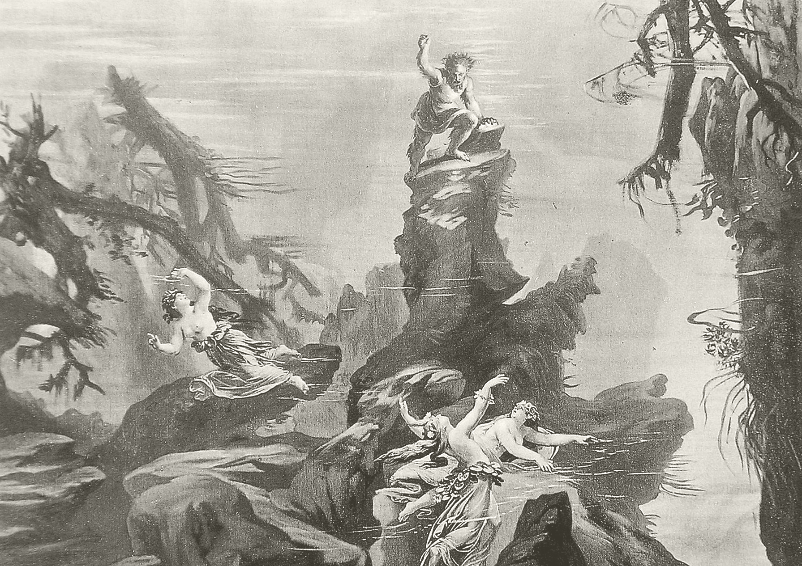

빌헬름 리하르트 바그너(Wilhelm Richard Wagner, 1813 ~ 1883)는 영향력 있는 독일의 작곡가이자 지휘자, 음악 이론가, 그리고 수필가이며, 그의 새로운 교향악적인 오페라(또는 “악극”)로 우선 잘 알려져 있다. 그의 작곡은 연속적인 대위법적 텍스처, 풍부한 화성과 오케스트레이션, 그리고 유도동기(라이트모티프, Leitmotif; 특정한 인물이나 상황에 연관된 음악 동기)의 교묘한 사용을 눈여겨볼 만하다.
바그너의 반음계적 음악 언어는 유럽 고전음악의 이후 발전을 암시하며, 이는 극단적인 반음계법과 무조성을 지향했다. 그는 음악적 사고를 그의 '총체예술' 이라는 발상을 통해 전환해 나갔고, 이는 그의 기념비적인 네 개의 오페라 연작 니벨룽의 반지(1876) 을 통해 잘 드러나 있었다. 유도동기와, 종합적인 음악적 표현이라는 그의 개념은 많은 20세기의 영화음악에 강한 영향을 주었다. 바그너는 또한 극도로 찬반이 엇갈리는 평가를 받는 인물로서, 이는 그의 음악과 드라마에 대한 혁신으로 인한 것뿐만 아니라, 그의 반유대인적 시각에도 원인을 두었다.
쇼펜하우어의 철학에서 음악은 예술 가운데에서 최고의 지위를 점하며, 이는 음악이 물질계와 연관되지 않은 유일한 예술이라는 이유 때문이라고 하였다. 바그너는 이 주장을 환영했으며, 그가 그의 "오페라와 드라마"에서 이와 직접 상반되는, 오페라의 음악이 드라마의 원인에 따라가야 한다는 주장을 폈음에도 불구하고 쇼펜하우어와 강하게 공명을 이루었다. 바그너 학자들은 이러한 쇼펜하우어의 영향이 바그너로 하여금 그의 반지 사이클의 뒤쪽 절반을 포함하는 후기 오페라에서 음악이 더 강한 명령을 하는 역할을 맡도록 했다는 주장을 했다.
I forgive anyone who has ever been sceptical about the development of a New Art Form of instrumental music.
바그너는 쇼펜하우어의 ‘의지와 표상으로서의 세계’를 취리히 망명 시절인 1854년 가을(초판이 나온 지 이미 30년이 지난) 같은 정치 망명가였던 시인헤르베그(Gerog Herwegh)에 의해 처음 접하게 된다. 예술을 통한 완전한 의지의 거부를 자기 구원의 길로 제시하면서 세계와 음악을, 의지를 기원으로 하는 아날로그의 관계 안에서 고찰한 쇼펜하우어의 음악미학은 바그너에게 충격 이상의 의미를 주게 된다. 바그너는 자서전에서 이 철학 저서를 단기간 동안 4차례에 걸쳐 반복하여 탐독하였으며, 이는 자신의 생에 결정적인 영향을 미치게 되는 결과를 낳았다고 고백하였다.
바그너는 당시 프랑크푸르트에 거주하고 있던 쇼펜하우어를 취리히에서 만날 수 있는 기회를 간절히 원했으나 1854년 12월 당시 작업 중에 있던 ‘니벨룽의 반지’(Der Ring des Nibelungen: 1851-74)의 텍스트를 철학자에게 보내면서 그에 대한 ‘존경과 감사’를 표시하는 데 만족할 수밖에 없었다. 답장 대신에 바그너는 지인을 통해 쇼펜하우어의 결코 호의적이라고 할 수 없는 자신에 대한 평을 접했다.

『니벨룽의 반지』 (Der Ring des Nibelungen)
독일의 작곡가 리하르트 바그너가 작곡한 4개 악장의 서사 악극곡이며 오페라 역사상 가장 중요한 위대한 걸작 가운데 하나라는 평가를 받는다. 저주 받은 반지가 저주에서 풀려나기까지의 여정과 그 반지를 둘러싼 다양한 인물들의 이야기를 담고 있으며 푸치니를 비롯한 이후 작곡가 세대에 깊은 영향을 끼쳤다.